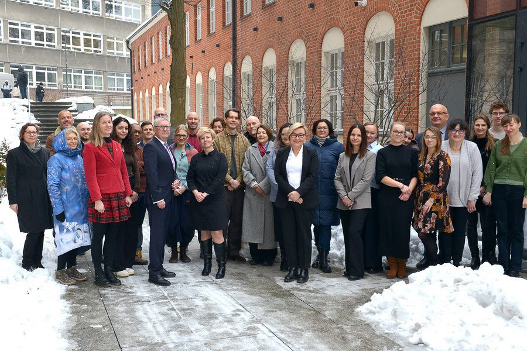

10.02.2026 · Meetings
On 10 February 2026 the Faculty of Architecture at Gdańsk Tech officially launched the international LIGHT project. It runs in the Driving Urban Transitions partnership and works on Positive Energy Districts, with a particular emphasis on residents’ health and quality of life.

Gdańsk Tech leads the project, coordinated by Prof. Justyna Martyniuk-Pęczek. The Vice-Rector for Research, Prof. Dariusz Mikielewicz, opened the meeting. The Dean of the Faculty of Architecture, Prof. Jakub Szczepański, the Vice-Dean for Research, Prof. Karolina Krośnicka, and the project coordinator also addressed the guests.
LIGHT joins energy, environmental, spatial, social and mobility goals. The research includes the potential of blue-green infrastructure to limit the urban heat island, access to daylight in denser areas, noise and air quality. The coordinator said such districts should protect residents in energy crises and harsher weather, and that changing the structure of the city also needs public acceptance.
Three living labs will be set up. Kartuzy will test energy renovation of buildings and blue-green infrastructure. Lund focuses on densification and climate-neutral energy generation. Innsbruck is developing a virtual lab and urban scenarios, including parametric design. The project is to leave tools, guidelines and simulation models that other European cities can reuse.
On the Polish side the consortium includes Gdańsk Tech, the Medical University of Gdańsk, the University of Gdańsk, the Gdańsk Foundation for Social Innovation and the Municipality of Kartuzy. The faculty article also names Universität Innsbruck, Lund University, Lund Municipality, Idiap and White Arkitekter among the international partners. The launch began a first round of discussion. Further meetings, including online, are to sharpen the research directions.
The project is co-funded by the European Union through DUT and received funding from the National Centre for Research and Development under DUT Call 2024. The full project value is PLN 5,399,394.98, or EUR 1,263,016.37. The NCBR grant is PLN 2,029,556.22. It runs from 1 January 2026 to 31 December 2028.
Source: Gdańsk Tech launches the international LIGHT project, Faculty of Architecture, Gdańsk Tech.